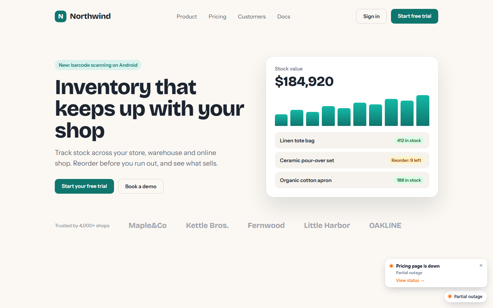

Customers add a badge to their README, drop a 2 KB widget on their site or read the public JSON API. It all updates by itself.

Status page, monitor status or 30-day uptime. Flat or flat-square, custom label.
A status pill, plus a banner while an incident is open. Shadow DOM, light or dark.
<script async src="https://status.example.com/sz.js" data-page="demo" data-position="bottom-right"></script>
Read-only, CORS enabled, cached for 30 seconds.
GET /api/status/demo { "status": "partial_outage", "headline": "Partial outage", "components": [ { "name": "Pricing page", "status": "down" }, … ], "activeIncidents": [ { "title": "Pricing page is down", … } ] }